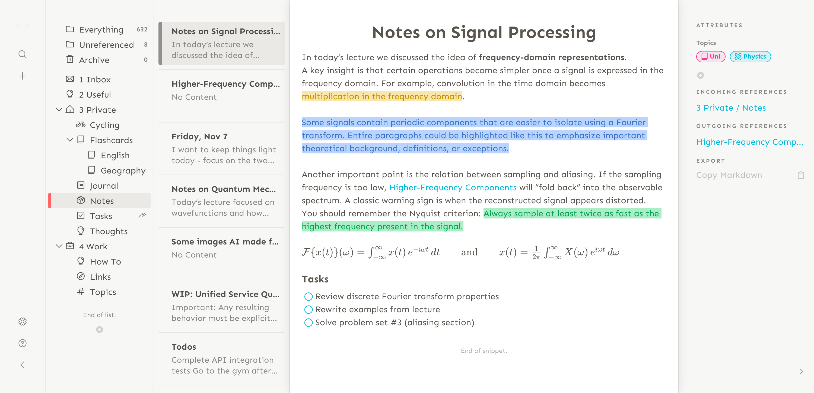
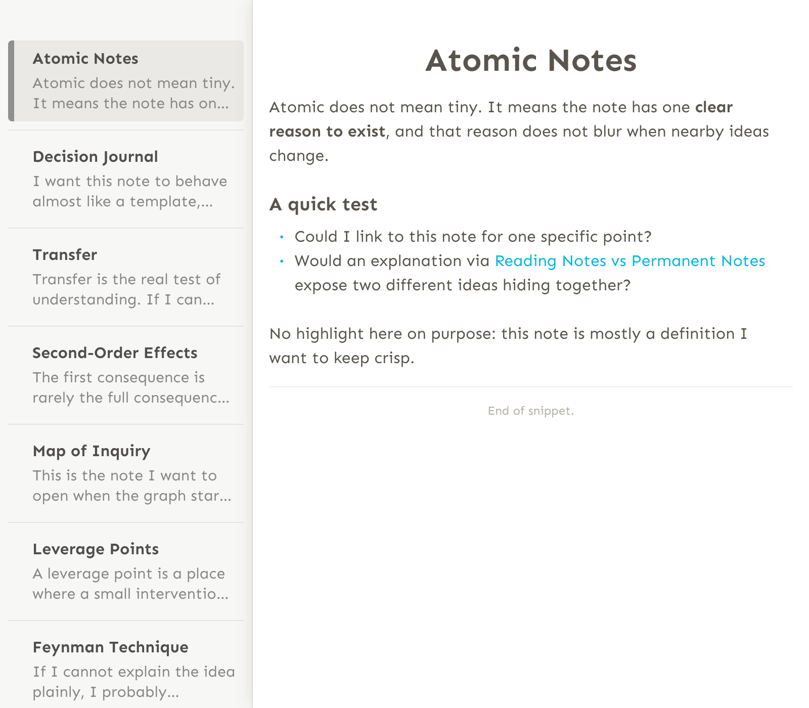
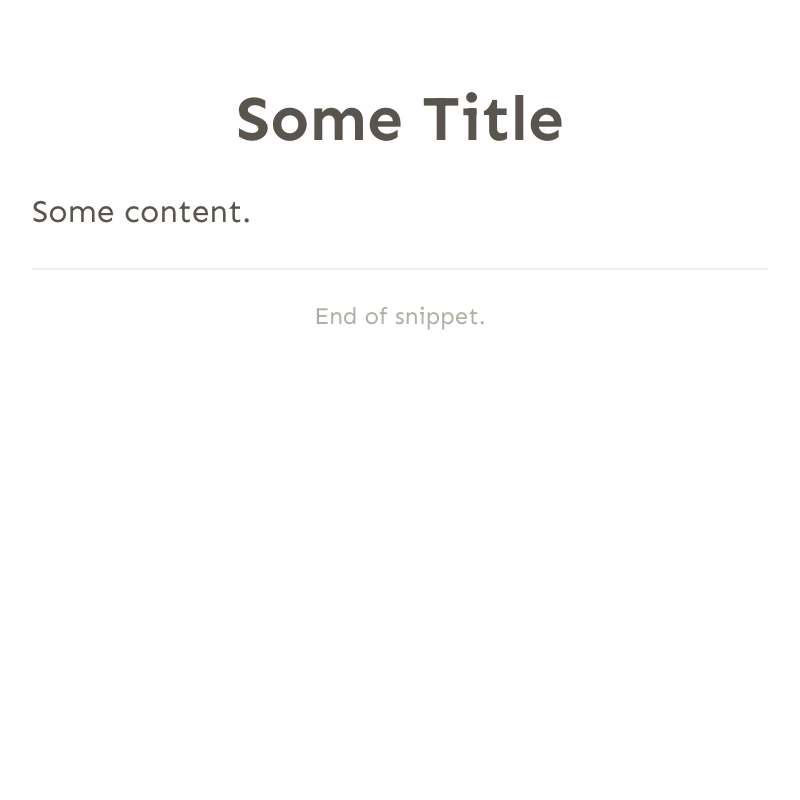
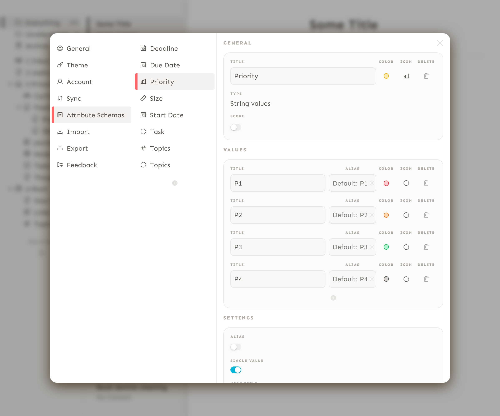
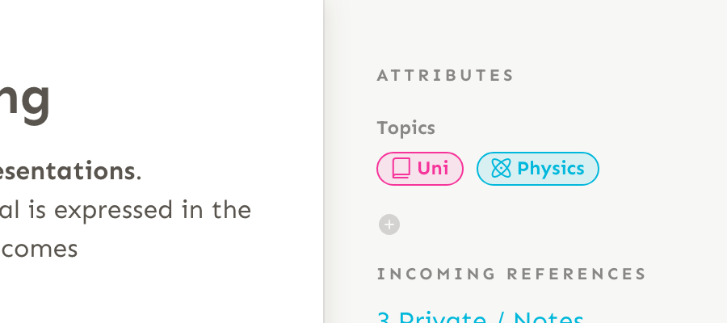

Note-taking is a meaningful activity.
We take notes for all kinds of reasons: to remember something, work through an idea, plan the day, or make sense of what we’ve learned.
We use notes in different places: in our work, our studies, our personal projects and private lives. Some notes are useful only for a while, others stay for years, perhaps a lifetime.
Note-taking is therefore a fundamental part of our everyday routines, and the pursuit of good software to support it seems never-ending. And that’s why Snippets was created.
Snippets was built with deep care and attention to detail. It was designed from the ground up to be lightweight, flexible and simply useful. It adapts to different people and different ways of taking notes. More than just a place to write things down, it is meant to become a long-term companion: a note taking app that grows with you.

Note-taking that grows with you
Snippets is all about simplicity. Its interface is completely decluttered: when you open the app for the first time, you're presented with a blank slate. No assumptions are made about how you should take and organize your notes.
From there, it's entirely up to you. If you only want to write a handful of notes, feel free — you don't even need to use folders. If you want more structure, you can gradually introduce different ways of organizing your content. And if you choose to go all in, Snippets is ready for that too, with a rich set of features for power users.

A productivity app that does it all
Most productivity apps follow the same pattern: focus on a narrow niche and solve one specific problem. From a marketing and development standpoint, this makes perfect sense — it keeps the product simple and easy to position.
But for users, it often creates a frustrating reality.
Essential features don't materialize because the app's core concepts lack flexibility. Workflows become fragmented across multiple tools. Data gets scattered. And in the end, people find themselves paying several subscriptions just to cover relatively simple, everyday needs.
Snippets takes a different approach.
Instead of solving one small problem, it is designed from the ground up to support a wide range of productivity use cases within a single, coherent system. Its universal architecture allows it to grow with the user, rather than forcing them to adapt to rigid limitations.
3 Core concepts
Snippets is made up of 3 core concepts. They exist in isolation and accumulate to great power once combined.
The 'Snippet'
Everything you create in the app is called a Snippet.
The most obvious example is the rich text snippet. It's represented as a JSON object containing the text you've written. A flashcard snippet works the same way: it stores the two sides of a card.
But here's where it gets interesting: even a folder is a snippet. It stores a path (for example, "path / to / folder"), an optional icon, and —most importantly— references to other snippets.
The snippet is the most fundamental building block within the app. It's a simple yet powerful idea: anything that can be stored as a json structure and represented through a UI can be a snippet.
Under the hood, a sophisticated plugin system ties the different snippet types together and turns that into a cohesive note taking user experience.
{
"body": {
"document": {
"type": "doc",
"content": [
{
"type": "heading",
"attrs": { "level": 1 },
"content": [{
"type": "text", "text": "Some Title"
}]
},
{
"type": "paragraph",
"attrs": {},
"content": [{
"type": "text", "text": "Some content."
}]
}
]
}
},
"pluginName": "richtext",
}

References
A snippet can reference other snippets. As mentioned before, the folder snippet references other snippets by keeping a list of references in its data structure. Dashboards do the same thing, although the datastructure is not a plain list but a recursive tree-like hierarchy.
When you create a rich text snippet inside a folder, you're adding a reference to a folder snippet. When you place a table on a dashboard and add entries to it, you're really just referencing snippets on different levels: the dashboard snippet references the table snippet, while the table snippet references multiple rich text snippets.
Even rich text snippets can reference other snippets. This works much like a wiki: you start in one rich text snippet and jump to another through a reference.
Here's an example of how a folder snippet is represented:
{
"body": {
"iconName": "package",
"path": ["Private", "Notes"],
"views": [{ "type": "folder" }],
"snippetReferences": [
"a886215c-c022-4ba9-b746-40ad0f084985",
"099a2b9e-faf7-4b29-b697-aae38735b248",
"e83bb143-a678-4dc6-a05a-a5ea3a3587f3",
...
]
},
"pluginName": "static-collection"
}
The JSON representation of a static collection, using a folder view and referencing other snippets. It will be shown in the navigation view under Private > Notes, using the 'package' icon.
Attributes and Attribute Schemas
Attributes are structured pieces of information attached to snippets. They can be thought of as a hybrid between tags and properties.
Before using an attribute, an attribute schema must be defined. The schema describes the name and the shape of the attribute, most importantly its type. For example, to represent a date you would use a date attribute schema. To represent a fixed set of values—such as a priority from P1 to P4—you would use a string-values attribute. Schemas can also optionally define a color and an icon.

Once an attribute schema is created, it becomes available throughout the app. For example, attributes can be used as columns in tables, or embedded directly in rich text notes—similar to using a #hashtag in traditional note-taking apps.

Made to fit your workflow
Thanks to its modular design, Snippets supports a wide range of productivity use cases.
Simple note-taking
If you want, you can keep it dead simple. Whether it's a few notes, quick thoughts, or simple to-do lists, you'll feel right at home.
Rich text editing
Write beautifully structured documents. The editor comes with a few editing capabilities we bet you haven't seen anywhere else. You can use markdown-like syntax to create formattings or use the floating toolbar.
Personal Knowledge Management (PKM)
Organize your knowledge however you like: with folders, dashboards, references, and attributes.
Task management
Powerful and completely customizable, right out of the box. Thanks to the app's architecture, task management is deeply integrated into the experience. Snippets is unique in how it bridges the gap between classic note taking and task management.
Grocery Lists
A use case closely related to task management, integrated with the same look and feel. Use our icon set to categorize your shopping items.
Cataloguing
Build rich tables with customizable columns and multiple data types — perfect for collections, inventories, research, and more.
Journaling, habits, and goals
Reflect on your life, track progress and build streaks.
Flashcards
Bring your digital flashcard deck everywhere you go.
There is more to come
There are many more features planned: Time blocking, PDF support, calendar integration, whiteboards, voice memos and audio transcription, Web Clipping, AI integration, and much more. Follow us to stay tuned.
Privacy guaranteed
Flexible sync
Snippets gives you full control over how and where your data is stored. Keep everything offline by syncing to a local folder, use a GitHub repository for vendor-independent cross-device syncing, or onboard to our dedicated cloud service for a seamless integration.
Workspaces
Organize your notes into separate, isolated workspaces. Each workspace is linked to a specific sync target, and you can create as many workspaces as you need.
End-to-end encryption
For every workspace you create, you can choose to enable end-to-end encryption (E2EE). This feature is available with a paid subscription.
Find out more about syncing here.
A great rich text editing experience
Why it matters
Writing is the core of any note-taking app, so the editing experience matters more than anything else. When the editor feels smooth and responsive, your thoughts flow easily. But when it's awkward or unreliable, even simple writing becomes frustrating.
Where editors often fall short
Many rich-text editors struggle with the basics. Creating or removing formatting can feel clumsy, it's often unclear whether the cursor is inside or outside a formatting, pasting content produces odd results, and clicking a link may open a browser instead of letting you edit it. These, among others, are small issues on their own, but they quickly add friction to everyday writing.
Markdown and block-based apps don't solve this
Markdown-based editors avoid some of this, but often feel jumpy and hacky when editing. Block-based apps take another approach, but by splitting everything into separate blocks, they introduce hard boundaries that get in the way of simple text editing.
Closing the gap
Snippets brings together the best parts of different editing styles without the downsides. Writing is rich-text-first, but you can still use familiar keyboard shortcuts to create and remove formatting. You can move cleanly in and out of formatted text, rearrange content with drag-and-drop, and fall back to a toolbar if you forgot a shortcut.
The result is an editor that feels unobtrusive and lets you focus on writing instead of managing the editor.
Purposely not Markdown-Based
Snippets is intentionally not based on Markdown. Markdown works well for technical documentation and collaborative workflows where content lives in version control. For note-taking, it quickly becomes a constraint.
By moving beyond Markdown, Snippets can rely on rich, structured data instead of plain text files. This enables far more expressive content and supports a wide range of use cases without forcing everything into a text-only format. Concerns about vendor lock-in are addressed through a simple export-to-Markdown option.